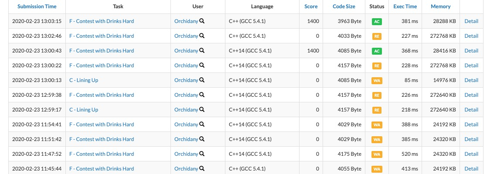

有 $n$ 个点，选择第 $i$ 个点有 $a_i$ 的代价。如果一个极大的、长度为 $L$ 的区间内的点都被选了，这个区间会带来$\frac{L^2+L}{2}$ 的收益。
询问共 $q$ 组，为对 $a_i$ 的单点修改。 询问彼此独立。
形式化地讲，给定 $\{t_n\}$ ，求一组 $\{x_n\},\forall i \in[1, n], x_{i} \in[0,1]$ 使可以得到：
$n, q ≤ 3 × 10^5$
一道神题…本质上虽然不是很难，但是碍于个人对斜率优化这个东西掌握的实在十分差劲，所以几乎把所有能踩的坑全踩了一遍。
$\rm Sol$
首先考虑对于每个询问，主要思想是维护一个前缀的 $f_i$ 表示不选 $i$ ，前 $i-1$ 个元素的最优解；$g_i$ 则是用来维护一个后缀，表示不选 $i$，$i+1\sim n$ 中元素的最优解。同时，再维护一个 $h_i$ 表示选了 $i$ 的全局最优解。那么这样就可以如此回答询问：
1 | while (m --){ |
于是考虑这三个东西应该怎么转移。先考虑 $f$ :
枚举的是 $[j,i-1]$ 这段区间。
变形可得
于是就发现，这是一个以 $f_j+s_j+\frac{j^2+j}{2}$ 为纵坐标，$i$ 为斜率的斜率优化。观察可知，横坐标 $j$ 单增，同时斜率 $i$ 也单增。所以对于这种类型的 $dp$ 只能用单调栈来维护。
同时，关于 $g$，只需要倒着做一遍 $f$ 的 $dp$ 即可。
1 | LL calc0(LL x, LL y){ |
考虑关于于 $h$ 的转移，朴素的转移是 $O(n^3)$ 的，类似这样：
发现并不可以过。发现转移是一个区间的形式，于是考虑分治。但是这个分治有个 $bug$ ，就是不是很容易维护跨过 $mid$ 的信息。
但发现一个性质，对于 $[mid+1,r]$ 之间的所有 $h$ 值，左边的所有点仅仅是帮助其成为最优解，也就是左边对右边的点满足单调性。那么我们就可以用单调栈来维护上一个不选的（即维护 $x$）同时枚举最后选的（枚举 $y$），即用 $[l,mid]$ 的值去更新 $[mid+1,r]$；同理对于右半边我们也可以这么做。
具体的，以用 $[l,mid]$ 的值去更新 $[mid+1,r]$ 为例，在算左半边的决策集合的时候，不需要考虑 $g_y$ 的贡献，所以就是一个裸的斜率优化；之后转移就只需要弹栈转移即可。
发现在转移 $h$ 的时候，由于固定了其中一个端点，依然满足斜率优化，于是复杂度为 $\max\{n\log n, Q\}$。
以下是坑点：
1、注意如果按照上述方式来转移，两个转移常数有些微不同（但是这些不同很致命
2、注意因为一开始 $\{g_n\}$ 这个东西是按照 reverse 的前缀和来转移的，所以在分治的时候需要重新计算前缀和。
3、在分治的时候，斜率啊什么的变换频繁，所以如果想要推明白，可以在维护上凸壳的时候偷懒这么写：
1 | #define tranl(b,a) g[a + 1] - s[a] + S[b] + F[b] + 1ll * ((a - b)*(a - b + 1)/ 2ll) |
然后每次比较就不需要斜率了，只需要 while (top > 1 && tranl(stk[top], i) <= tranr(stk[top - 1], i)) -- top ; 虽然显然本质上没什么不同，但这样或许会简单很多。
1 | const int N = 600010 ; |
后记
这题我从 2020.2.22 的晚上7点开始写，中间看了两个小时C菌直播行尸走肉并且睡了一个小时，本来写的很顺，后来发现一堆细节没考虑就开始自闭了，感觉就是行尸走肉太带劲了思路断了，$1$ 点垂死梦中惊坐起之后在黑黑的房间里 debug 到了早上4点，睡了3.5h之后起来发现只剩一个「 $g$ 当时是倒着求的」这么一个问题了，但不幸走了很多弯路，不过最终还是AC了…
其实有时候根本不知道自己为啥要这么做，这么做的意义似乎也不是很大，中途破坏了自己本来想早睡早起的计划、浪费了一场300iq出的比赛外加和老妈吵了一架。
但可能人生中没意义的事情还多的多，并且一件更比一件没意义，所以可能也不需要这么伤心。
安啦安啦，还要继续走下去啊。
